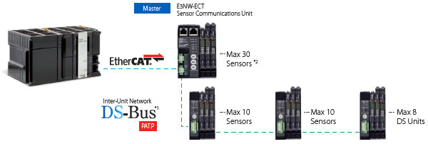

Sysmac is an integrated automation platform dedicated to providing complete control and management of your automation plant. At the core of this platform, the Machine Controller series offers synchronous control of all machine devices and advanced functionality such as motion, robotics and database connectivity. This multidisciplinary concept allows you to simplify solution architecture, reduce programming and optimize productivity.
Building Automation
Industrial Automation
Power Automation & Safety


Bangladesh Distributor
NJ
NJ Overview
Motion, Logic, Safety, Vision and HMI in one
about this Product Family
Related Contents
- Automation Systems
- Machine Automation Controllers
- Features
- Lineup
- Specifications
- Dimensions
- Catalog
last update: August 03, 2015
Sysmac: A fully integrated platform
Integration and Functionality
One Integrated Development
Environment software for Configuration, Programming, Simulation and Monitoring
Motion
• Motion Control: Integrated within the IDE, and operating in real-time
• Standard PLCopen Function Blocks plus Omron generated motion FB’s
• Direct Synchronous control for Position, Speed and Torque
Safety
• All safety related data is synchronized with the whole network
• The PLCopen® FBD simplifies and accelerates the development process through structuring safety circuits and enhancing reuse.
Vision
• Higher resolution images available without increasing the vision processing time
• Shape search technology: Provides more stable and accurate object detection for Pick & Place projects
Robotics
• Up to 8 Delta robots with one controller
• Time-based Robotic Function Blocks make programming easier
Sensing
• Full control of the process parameter setting and predictive maintenance functions
• High precision detection and positioning data synchronized on the network
Integrated Automation Control:
The Sysmac platform is scalable and provides the performance and functionality for a wide range of solutions from simple machines through to manufacturing cells
Information
• Sysmac communicates in real-time with Databases such as SQL
• Secure Data: In the event of a server going down or losing communications, data is automatically stored in internal memory
• Sysmac operates with Databases at high speed [1000 table element/ 100 ms] ensuring realistic Big Data Processing to improve productivity and aid predictive maintenance etc.
One Connection
Seamless machine control and factory automation
One machine control through one connection and one software is how we define the Sysmac automation platform. The Machine Automation Controller integrates logic, motion, safety, robotics, vision, information, visualization and networking under one software: Sysmac Studio. This one software provides a true Integrated Development Environment (IDE) that also includes a custom 3D motion simulation tool. The machine controller comes standard with built-in EtherCAT and EtherNet/IP. The two networks with one connection purpose is the perfect match between fast real time machine control and data plant management.
EtherCAT - Machine Control
• Fastest cycle time: 125 μs
• Up to 256 synchronized axes
• 512 slaves
• Embedded in Omron servo drive, inverter, I/O, Safety, Vision and Sensing
• Uses standard STP Ethernet cable with RJ45 connectors
• One connection using Safety over EtherCAT (FSoE) protocol
Ethernet - Factory Automation
• Peer-to-Peer controller communication
• Interface with Sysmac Studio , NA HMI or SCADA software
• Database connection for Microsoft SQL Server, Oracle, IBM DB2, MySQL and Firebird
• FTP server
One Software
One Integrated Development Environment Software
Created to give you complete control over your automation system, Sysmac Studio integrates configuration, programming and monitoring. Graphics-oriented configuration allows quick set-up of the controller, field devices and networks while machine and motion programming based on IEC standard and PLCopen Function Blocks for Motion Control cuts programming time. Smart Editor with On-line debugging helps quick and error free programming. Advanced simulation of sequence and motion control, and data trace reduce machine tuning and set-up.
Programming
Multi-tasking and fully compliant with IEC 61131-3 standard. The program editor includes smart support functions such as syntax error check and clear color segregation of variables and symbols. ST instructions can be directly written in Ladder programs thanks to in-line ST function.
Motion control
The graphical CAM editor allows quick implementation of complex motion profiles. CAM tables can be modified on the fly. A PLCopen Function Blocks for the Motion Control library are available to implement general purpose motion control.
Safety
The Function Block Diagram editor includes 46 safety FB/FN. Conforms with IEC 61131-3 standard programming and PLCopen Function Blocks for Safety.
Information
Projects can generate a huge volume of data, but thanks to the Sysmac Database Connectivity FB library, this data can be analyzed and acted on in real-time.
Simulation
Motion trajectories in 3D can be pre-tested with advanced simulation of sequence and motion control. Simulation of single Function Blocks, POU’s (Program Organization Unit) or the entire program can be performed. In addition all standard features such as Break & Step are available.
HMI
Design your own IAG’s (Intelligent Application Gadgets) using the machine parts collection. It is also possible to embed code within an IAG using Visual Basic standard functionality. The Simulator in the Sysmac Studio allows you to test the NA application with the Machine Controller program.
Robotics
Integrated robotics Function Block library for Delta 2 and Delta 3 control. A 3D simulator is also integrated in the Sysmac Studio, visualizing and reproducing the Delta robot trajectory.
Vision
Just drag & drop any processing items to build a program for image processing.
One Machine Controller
Complete and robust machine automation
The Machine Automation Controller is at the heart of the Sysmac platform. One integrated machine controller that offers speed, flexibility and scalability of software centric architecture without compromising on the traditional reliability and robustness that you have come to expect from Omron PLCs. The Machine Controller is designed to meet extreme machine control requirements in terms of motion control speed and accuracy, communication, security and robust system. You just create…
| Machine automation controller features |
|---|
| • Fastest system cycle: 125 μs |
| • Up to 256 synchronized axes |
| • Synchronized control of all machine network devices |
| • Multi-tasking programs |
| • In-line ST, Structured Text and Ladder mixed in the same program |
| • Full control of Axes Group Position |
| • System Backup and Restore |
| • Built-in EtherCAT and EtherNet/IP ports |
| • CE and cULus global standards |
Scalability, performance, robustness… Choose the most suitable CPU for your application!
Application libraries
• FB library option for packaging engineering (Rotary Knife, Winder/Unwinder, Temperature Control...)
System robustness
• One event log for controller, field devices and networks
• Standard PLC system check: Watch-Dog Timer, memory check, network topology check, etc.
Hardware design
• Architecture based on new Intel® CPU
• The most compact controller in its class
• Built-in USB port and SD card slot
Standard Factory network
• Programming
• Other Machine controllers
• HMI / SCADA
• IT systems
• Standard Protocols and Services: TCP/IP, FTP, NTP, SNMP
• CIP protocol
• Database connection FB’s for Microsoft SQL Server, Oracle, IBM DB2, MySQL and Firebird
• Built-in SECS/GEM communications functionality
Standard Machine network
• Servos
• Inverters
• Robotics
• Vision systems
• Distributed I/O
• Integrated Safety
• Sensing
Standard programming
• Fully conforms with IEC 61131-3 standards
• PLCopen Function Blocks for Motion Control
NA Programmable Terminal
The next generation of machine interface
An HMI that is dynamic, intuitive and predictive makes industrial machines more attractive and competitive. The new Omron HMI enables faster, more efficient control and monitoring - and a more natural, proactive relationship between operator and machine. The design has been based on real applications and customer requirements, a future- proofed, scalable platform that will evolve with their ever-changing needs, allowing real time reaction to events. As part of the system family, the NA Series is fully aware of the total machine.
| NA machine interface features |
|---|
| • Widescreen models: 7, 9, 12 and 15 inches |
| • 1280 x 800 high resolution display (12 and 15 inches) |
| • One integrated project in the Sysmac Studio: NJ/NX |
| • Controller, Safety, Vision and HMI |
Hardware design
• Fan-less cooling
• Water and dust proof design – IP65
• SD card slot for transfer/store projects and data logging
Connectivity
• 3 x USB ports: USB memory and programming
• 2 x Ethernet ports: for machine network / IT systems and programming
Machine interface
• Touch screen
• 3 x Programmable Function Keys
• Multimedia including PDF files and video
Scalable solution
• Display size from 7-inch up to 15-inch
• Widescreen in all models
• 1280 x 800 resolution for the 12-inch and 15-inch models
• 800 x 480 resolution for the 7-inch and 9-inch models
• Available in black and silver frame colors
IAG – Intelligent Application Gadgets
• Graphics collection from the machine parts
• Embedded code within an IAG with the Visual Basic standard functionality
• Make your own IAG collection and share them between projects, like a Function Block
Sysmac Studio
• NA HMI programming as a device in the Sysmac Studio
• NJ/NX controller variables (Tags) in the NA project
• Multiple-access level security with password protection
• Visual Basic programming with Visual Basic
• NA application testing with the NJ/NX program via the Simulator in the Sysmac Studio
NX I/O
Speed and accuracy for machine performance
Based on an internal high-speed bus running in synchronization with the EtherCAT network and using the time-stamp function, the NX I/O can be controlled with microsecond accuracy and with nanosecond resolution. The I/O range consists of over 90 models including position control, temperature inputs and integrated safety.
| NX I/O features |
|---|
| • NsynX technology provides deterministic I/O response with nanosecond resolution |
| • Digital I/O: high-speed and time-stamp models (NsynX) |
| • Analogue I/O: high performance models offer 10 μs conversion time per channel and 1:30000 resolution |
| • Detachable front connector with push-in type screwless terminals on all NX I/O units |
| • On/Offline configuration, simulation, and unified troubleshooting in the Sysmac Studio software |
| NsynX technology | |
|---|---|
| • The NsynX technology is provided by the internal
high-speed bus synchronized with the EtherCAT network. This technology is designed for machine control and includes: • I/O units with distributed clock • High-speed I/O units synchronized with the EtherCAT cycle • I/O units with Time-Stamp function (accuracy < 1 μs ) |
|
| Accurate control of input events and perfect control of output with nanosecond resolution | |
EtherCAT connectivity

• Distributed clock to ensure I/O response with less than 1 μs jitter
• Safety over EtherCAT (FSoE)
EtherCAT coupler
• Up to 1024 byte input / 1024 byte output
• Automatic backup/restore of all I/O unit parameters. Except Safety Control unit and Safety I/O units
Digital I/O
• Units for 4, 8 or 16 points
• Standard, high-speed and time-stamp models
• Relay outputs, NO only or NO+NC
• 240 V AC inputs
• 16- and 32-point units with MIL/M3 Screw/FCN connector
Serial communication
• Units for RS232C or RS422A/485 serial communication interface
• High signal density; up to 16 I/O points in 12 mm width

Analogue I/O
• +/-10V voltage and 4-20 mA current signals
• 2, 4 or 8 channels per input unit
• 2 or 4 channels per output unit
• Standard and highperformance models
Safety I/O
• Up to 8 safety input points per unit
• Freea allocation of the Safety I/O units on the internal high speed bus.
Position interface
• Encoder input units for connection of external axes to the Sysmac system
• Incremental and absolute encoder support
• Positioning control unit with pulse train output
Temperature Inputs
• Thermocouple or RTD inputs, 2 or 4 per unit
• Fast and secure screwless push-in connections
• Removable I/O connectors for easy pre-wiring, testing and system maintenance
NX Safety Control
Integrated safety into machine automation
The Sysmac platform integrates a safety solution within our one connection and one software concept. One connection is realized through the use of Safety over EtherCAT -FSoE- protocol. The One software is achieved by using the Sysmac Studio for configuration, programming and maintenance. The NX safety system consists of safety controller and safety I/O units. Both the safety controller and safety I/O can be freely distributed in an I/O rack throughout the network, mixing them in any combination with standard NX I/O.
| NX Safety features |
|---|
| • The safety controller meets PLe according to the ISO 13849-1 and SIL3 according to IEC 61508 |
| • Flexible system lets you freely mix safety controller and safety I/O units with standard NX I/O |
| • Integration in One software, Sysmac Studio |
| • Certified programs can be reused, which reduces the amount of verification work |
NX Safety controller
• The safety controller variables are part of the NJ/NX controller project
• Flexibility and reusability of the programming code
Safety integration in One software
• Integrated Development Environment in Sysmac Studio provides one common software for hardware configuration, programming and maintenance of the Sysmac platform
• 46 safety FB/FN conforming with IEC 61131-3 standard programming
• PLCopen Function Blocks for safety
NX Safety I/O
• Up to 8 safety input points per unit
• High connectivity I/O units for direct connection to a variety of devices
• I/O data monitoring in the NJ/NX controller project
G5 Servo system
At the heart of every great machine
Great machines are born from a perfect match between control and mechanics. G5 gives you that extra edge to build more accurate, faster, smaller and safer machines.
| G5 servo system features |
|---|
| • Compact size servo drives with EtherCAT connectivity built-in |
| • High-response frequency of 2 kHz |
| • Load vibration suppression |
| • Embedded Safety conforming ISO 13849-1 Performance Level d |
| • Advanced tuning algorithms (Anti-vibration function, torque feedforward, disturbance observer) |
| • Wide range of linear and rotary servo motors |
EtherCAT connectivity

• Compliant with CoE -CiA402 Drive profile-
• Cyclic Synchronous Position, Velocity and Torque modes
• Embedded Gear Ratio, Homing and Profile Position mode
• Distributed clock to ensure high precision synchronization
Safety conformance
• PL-d according ISO 13849-1
• STO: IEC61800-5-2
• SIL2 according to EN61508
Improved rotary motors
• Low cogging torque servo motors
• High accuracy provided by 20 bit encoder
• Motors and connectors with IP67
• Large range of motors from 0.16 Nm up to 96 Nm nominal torque (224 Nm peak)
• Standard and high inertia motors
Ironless linear motors
• Compact, efficient design
• Excellent force-to-weight ratio
• No latching force
Iron-core linear motors
• Compact, flat design
• Optimum ratio between force and volume
• Weight-optimized magnetic track
MX2 V1 and RX V1 Inverter series
Drive solution for machine automation
Thanks to its advanced design and algorithms, the MX2 V1 inverter provides smooth control down to zero speed, plus precise operation for cyclic operations and torque control capability in open loop. The RX V1 combines high performance, application functionality and customisation to match the precise requirements. Both, the MX2 V1 and RX V1 inverter series are fully integrated within the Omron Sysmac automation platform.
MX2 V1
| MX2 V1 features |
|---|
| • Power range up to 15 kW |
| • Torque control in open loop, ideal for low to medium torque applications |
| • 200% starting torque near stand-still operation (0.5 Hz) |
| • Double rating VT 120%/1 min and CT 150%/1 min |
| • IM and PM motor control |
| • Drive Programming software tool |
| • Built-in application functionality (i.e. Brake control) |
Torque control in open loop
• Ideal for low to medium torque applications
• Can replace a flux vector inverter or servo drive in suitable systems
Quick response to load fluctuation
• Stable control without decreasing machine speed improves quality and productivity

RX V1

| RX V1 features |
|---|
| • Power range up to 132 kW |
| • Sensor-less and closed-loop vector control |
| • High starting torque in open-loop (200% at 0.3 Hz) |
| • Full torque at 0 Hz in closed-loop |
| • Double rating VT 120%/1 min and CT 150%/1 min |
| • Drive Programming software tool |
| • Built-in application functionality (i.e. ELS - Electronic Line Shaft-) |
Motor efficiency control
• Double rating VT 120%/1 min and CT 150%/1 min
• Energy saving function
200% starting torque
• Near stand-still operation
• High starting torque in open loop
• Control of fast cyclic loads
FQ-M Vision sensor
Designed for object tracking
The FQ-M series is a vision sensor designed specifically for pick and place applications. It comes with EtherCAT embedded and can be configured and monitored from Sysmac Studio software. The FQ-M series is compact, fast and includes an incremental encoder input for easy tracking and calibration.
Advanced shape search technology
Varying material ie. shiny
Overlapping products
Product detection: 10 pcs with rotation < 200 ms
Detection
• Up to 5000 pieces per minute with 360 degree rotation
• Stable and robust detection under changeable environmental conditions
Design
• Camera and image processing in one
• Standard C-mount lenses; choose the field of view and focus distance you need
• Variety of industrial connector types (angled, straight) for correct mounting
• EtherCAT port for object tracking
• Ethernet port for advanced configuration and monitoring
• Vision sensor with encoder input for tracking function
Software tool
• Fully integrated within the Sysmac Studio software tool
• Intuitive and icon driven set-up and configuration
• Trending and logging function
FH Vision system
Flexible solution for machine vision
The FH vision system is optimized to detect the position and orientation of any object at high speed and with high accuracy. The built-in EtherCAT communications enable reliable and easy networking with motion control, increasing the overall machine performance. A flexible machine vision tailored for quality inspection.
Multiple inspection
• Powerful 4-core i7 parallel processor
• Up to 8 camera by one controller
Flexible machine vision
• Over 100 processing items including 1D code, 2D code and OCR
• Inspection of scratches and defects
Advanced shape search technology
• Differences of the work piece
• Dust and dirt conditions
• Detection of overlapping objects
• Changing ambient environment
Wide camera range
• Up to 12 Mpixel
• High speed CMOS camera
• Use different fields of vision and at any angle
ZW Measurement Sensor
Ultra-compact, Lightweight sensor measures any material
The ZW confocal fiber displacement sensor delivers stable, non-contact in-line measurements of height, thickness and other dimensions. It solves the problems of traditional laser triangulation sensors: deviation between different material with inclination tolerance. The compact sensing head has no electronic parts to eliminate problems of installation space and mutual interference, electrical/magnetic noise, temperature rise and mechanical positioning. The EtherCAT interfaces integrates height and position coordinates for profile mapping.
• Ultra-compact sensing head: 24x24mm weighs only 105g
• High flexibility fiber optic cable from sensor to controller - up to 32m
• Mount sensing head one time - no need to re-tune for changing materials
• Separate amplifier provides white LED light source, spectroscope and processor to convert reflected color light to distance
• Stable measurements for any material - glass, stainless steel, mirror, white ceramic and PCB substrates
N-Smart Series
Various Sensors Connected over EtherCAT
The N-Smart Lineup of Next-generation Fiber Sensors, Laser Sensors and Contact Sensors will quickly solve your problems and therefore increase equipment operation rates and minimize downtime with optimum cost performance.
| Features |
|---|
| • Ultra-easy Advanced Smart Tuning with the push of a button |
| • More stable detection of high-speed workpieces |
| • Predictive Maintenance to reduce downtime |
| • Highly visible white LED display |
| • E3NX-FA has 1.5x the sensing distance of conventional amplifiers |

*1. The DS-Bus is an OMRON inter-Unit net-work communications protocol, that connects the E3NW-ECT Sensor Communications Unit and E3NW-DS Distributed Sensor Units.
*2. Each E3NW Node supports a maximum of 30 total sensors, including DS-Bus sensors.
last update: August 03, 2015